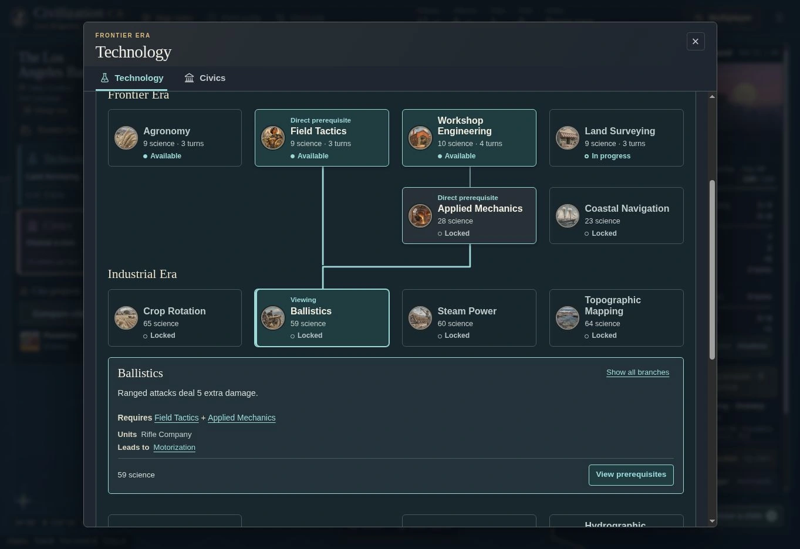

What does Ballistics require?
Select Ballistics in the technology tree. Two bright lines lead into it, one from Field Tactics and one from Applied Mechanics. In this opening, Field Tactics is available. Select the locked Applied Mechanics card to trace its branch back to Workshop Engineering.
Enlarge technology tree